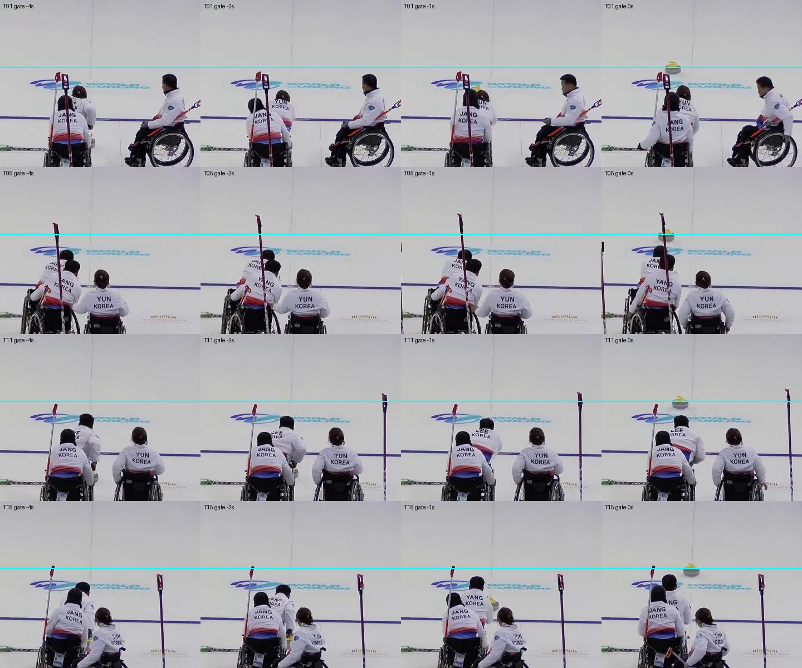

Conclusion limitée au court segment visible. Nous mesurons l’écart entre les observations du détecteur et une droite, pas l’erreur physique de trajectoire. Le lâcher et le trajet avant la première détection restent inconnus. Aucune valeur en centimètres n’est revendiquée ici.
Les pixels ci-dessous sont ceux du détecteur 640 × 360. Sur la vidéo 1920 × 1080, multiplier par trois. Une homographie préserve les droites : la perspective seule ne transforme pas une ligne droite du plan en courbe. Les distances en pixels ne sont cependant pas des distances sur la glace.
Vert : observations détectées. Rouge : droite reliant les première et dernière observations. Une droite ajustée à toutes les observations minimise l’écart ; son résultat est donc plus optimiste. Les points ne sont pas une vérité terrain, et les déplacements du centre apparent peuvent venir de la détection.
| Lancer | Durée visible | Points | Écart max à la droite entre extrémités | RMSE sur points ultérieurs réservés |
|---|
À −4, −2, −1 et 0 seconde du passage, sur quatre lancers : les joueurs et fauteuils masquent souvent les positions précédentes. Ces images fournissent le contexte ; elles n’annotent pas l’instant du lâcher.

Observations et résultats · Protocole · Segments et trajectoires